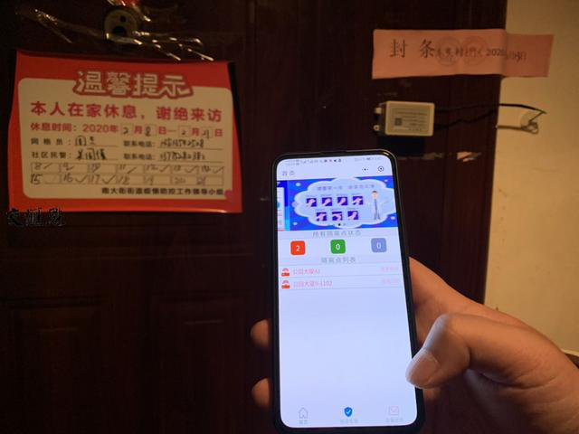
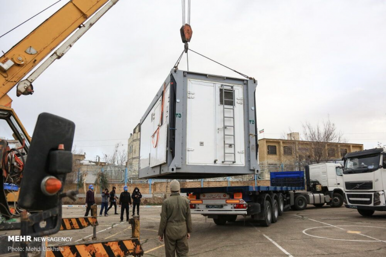

资讯详情
原文链接 备份链接 叶青武汉日记：方舱医院关了一家 5709 来源：正和岛 作者：叶青 03-02正在打榜，当前第3 [ 中国企业家杂志 - - …
![]() 6480
6480
来源：正和岛
作者：叶青
03-04正在打榜，当前第1

1、武汉疑似病例降到234例
3日，全国新增确诊病例119例，新增死亡病例38例（湖北37例，内蒙古1例），新增疑似病例143例。截至3日，全国现有确诊病例27433例（其中重症病例6416例），累计治愈出院病例49856例，累计死亡病例2981例，累计报告确诊病例80270例。湖北新增确诊病例115例（武汉114例），新增治愈出院病例2389例（武汉1859例），新增死亡病例37例（武汉31例），现有确诊病例25905例（武汉22368例），其中重症病例6232例（武汉5723例）。累计治愈出院病例38556例（武汉24890例），累计死亡病例2871例（武汉2282例），累计确诊病例67332例（武汉49540例）。新增疑似病例52例（武汉43例），现有疑似病例340例（武汉234例）。最关键的是，武汉治愈的超过确诊的病例。这是历史性的。
截至欧洲中部时间3日上午10时（北京时间17时），中国境外共72个国家确诊新冠肺炎10566例，死亡共计166例。与前一日相比，中国境外新增新冠肺炎1792例，新增8个国家出现病例。其中，韩国新增516例新冠肺炎确诊病例，累计5328例。钟南山担心的成为现实。钟南山院士曾在2月27日出席广州市政府新闻办举行的通气会时表示，中国可能从输出病例变为输入，应加强国际联防联控。钟南山说：“危难当头，我们和日韩需要互相支持，希望能及时掌握国外病情和治疗方法，共同减少病情扩大。”现在已经超过1万例。
2、武汉要争取国家临床医学研究中心
20多天以来，应、陈、王、贺四位领导表现得非常出色，湖北人十分佩服。 我最喜欢敢于创新的领导。因为给民众带来新的希望。 陈与王坐镇武汉，可以说是滴水不漏，推陈出新。每次讲话都有新内容，防控方案越来越严密。应与贺掌控全省，完成党中央交给的防控任务。 3日晚，王忠林主持召开市委常委会会议。提出：抓住机遇，争取布局国家临床医学研究中心，提升武汉大健康产业水平。 我查了一下，国家临床医学研究中心1-4批，50个，真的没有武汉的。 武汉要努力。 3日，武汉市委组织部提拔10名奋战在疫情防控一线，表现优秀、业绩突出、群众公认的干部。 王卫华，女，1966年10月出生，现任市肺科医院（市结核病防治所）党委书记，拟任市卫生健康委员会副主任、党委委员。 刘庆香，女，1965年6月出生，现任市政协常委，市卫生健康委员会副主任，拟晋升二级巡视员。最早被谣言误伤的人。 陈光，男，1969年12月出生，现任市公安局经济犯罪侦查支队支队长、党委书记、一级高级警长，拟任黄陂区委常委，市公安局黄陂区分局局长。 何勇，男，1971年8月出生，现任市市政建设集团有限公司总经理、董事、党委委员，市城建工程有限公司董事长、党委书记（兼），拟任武汉航空港发展集团有限公司副总经理、党委委员。 童卫桥，男，1961年10月出生，现任江岸区卫生健康局党委书记、局长，拟晋升一级调研员。 叶青，女，1969年3月出生，现任硚口区汉中街党工委书记，拟晋升一级调研员。祝贺同名同姓者。我也沾光。 金光伟，男，1964年1月出生，现任武昌区徐家棚街党工委书记，拟晋升一级调研员。 纪宏杰，男，1975年11月出生，现任洪山区珞南街党工委书记，拟晋升一级调研员。 胡昌林，男，1968年12月出生，现任蔡甸区交通运输局党委书记、局长，拟晋升一级调研员。 曾祥华，男，1964年3月出生，现任武汉东湖新技术开发区关东街党工委书记，拟晋升一级调研员。 在全国人民的支持下，现在，武汉市民的生活越来越稳定。 截至3日，武汉市已有38家中百仓储门店开通多点线上业务，附近居民可以用手机APP进行个性化需求采购。 3日，江苏省如皋市捐赠的4万斤黑塌菜运抵武汉，当天就分到了江岸区后湖街、塔子湖街、丹水池街、谌家矶街的35个社区困难家庭。 3日，一辆满载30吨大米的大货车抵达武汉，这是湖南常德的“微助武汉运输直通车”的第32趟捐赠。 白沙洲大市场每天进场车辆超5000辆，蔬菜日均交易量2000吨以上，其中外地蔬菜占比七成，价格与去年同期相比总体平稳。 我发现，这次疫情不久改变每个人、每个家庭、每个城市，乃至于国家，也会改变城市之间的关系。城市之间关系的关系越来越亲密。很多县城的医院都派出了医护人员到湖北。 以后，城市的良性竞争会越来越多。
3、逐步缩减新冠肺炎定点医院
3日下午，湖北省新型冠状病毒肺炎疫情防控工作指挥部召开第38场新闻发布会。一系列数字反映了40天的成绩。 截至3月2日，同济光谷协和医院等10家危重症救治定点医院共开放危重症床位7286张，其中负压ICU病床245张，共收治危重症、重症患者3728名。 对发热患者、疑似病例及轻型、普通型确诊病例进行健康状况监测，开展鉴别诊断和初步治疗，大力发挥中医药在轻症肺炎中的救治作用，现在基本上做到了中药应服就服。 344支国家医疗队42322名医务人员支援湖北。 在这些医疗团队中，重症医学科、感染科、呼吸科、心血管科和麻醉科的专家达到15000多人，援鄂医疗队直接接管病区，在救治过程当中发挥重要作用。 后续将根据疫情实际，逐步缩减新冠肺炎的定点医院，有序关停方舱医院，分批分步恢复正常的医疗秩序。 在40天中，有数不清的喜怒哀乐。 3日上午10时整，98岁的时婆婆和79岁的女儿李婆婆以及46岁的外孙女，在武汉市第一医院治疗20天后达到出院标准，祖孙三代治愈同日出院，乘车到洪山区某商务酒店进行14天离院隔离。 20天，小白肺到清晰肺，核酸由阳转阴，这间30平方米的病房里，祖孙三代经历了生与死。 2月15日，哈尔滨医科大学附属第一医院第二批援汉医疗队40名医生和120名护士共160人整建制接管武汉市第一医院13、14两个重症病区，担负起70多名重症患者的救治工作。心内科三病区副主任、主任医师、博士李元十是她们一家三代的主治医生。 看到一篇日记《泪目！女孩追忆逝去男友：武汉，我恨你！》，记录悲痛的一面。 佟生，你知道吗，你走后的一周，武汉变了。 换了将，换了帅。病床有了。现在是床在等人，而不是人在等床了。你为什么就不能坚持几天呢？你要能坚持几天，我们又何必来生再相见？ 你走了，我肚子疼时谁来担心？我头疼时谁来揉捏？我闹脾气时谁来哄我？说好的来年三月，我们一起去东湖，在樱花盛开的时候，拍婚纱照；说好的一起奋斗，筑我俩的爱之巢。 大家关注的华南海鲜大市场终于要清理了。 3日下午，位于武汉市江汉区的武汉华南海鲜批发市场启动大规模消杀作业。在进入华南海鲜批发市场的多支队伍中，有来自四川省第三批援助湖北疾控队中的9名队员。 四川疾控9名队员组成了现场消毒组三队，从3月3日下午一直工作到深夜，完成了对华南海鲜市场东区四五六街区路面、门面、店铺、店铺内物体表面的消杀工作，作业面积约2000余平方米。闷在包裹严实的防护服中连续作业，队员们只在吃晚饭时脱下防护服稍微透了口气。 请记住这9名勇士：关旭静、喻文杰、蒋恩霏、赵林、郁文、王保东、段振华、杨能飞、杨帆。 十多年来，武汉的三环以内不知道搬迁了多少市场，连大名鼎鼎的汉正街大市场也在其中。不知道这样一个海鲜大市场（也是野生动物大市场）何以可以长期存在。这些问题总有说清楚的一天。
4、上海人想起当年的800壮士
上海，曾经在抗日战争时期的淞沪战役，在外滩附近的四行仓库，有一场狙击战，800壮士在这里与日军对垒，尽管中国主力部队已经撤出上海，转移到南京、武汉一线，布置南京会战、武汉会战，但是，这一只谢晋元将军领导的孤军，硬是守着四行仓库，打退了敌人一轮又一轮的进攻。 这只部队的战士，80%来自湖北（保安团）。 今天，在这个武汉战疫，来自上海药融圈的800壮士，为汉阳医院的“战士”们，送来急需的战车！

武汉的华商研究院在发出为抗击疫情捐赠一辆救护车的倡议之后，得到了包括董事长班在内的校友的纷纷响应，积极捐献。短短一天半的时间募得爱心款项242600元，在爱心校友的合力下，将本次募得款项捐赠给了一直奋战在抗疫一线的武昌首义学院医院购买救护车，用于本次疫情中的新冠病人的救治转运。我看了参与救护车捐赠的爱心学员捐款明细，少的2000元，多的一万元，积少成多。他们表态，捐车活动会继续下去。这让我想起抗美援朝。1951年，“中国人民抗美援朝总会”发出通告，号召全国人民捐献飞机、大炮，支援抗美援朝。
常香玉太想为国家奉献这份力，有人给常香玉出主意，让她“用向志愿军赠献战斗机的名义进行捐献演出”。卖掉自己的运输卡车，取下金戒指，拿出积蓄，义演180多场，共捐款15.2亿元（旧币），超额完成了捐献飞机的心愿。截至当年9月上旬，按捐款计算，就得飞机209架、大炮19门、高射炮12门……有人把钱捐到庙里，名字刻在柱子上。有人把钱捐给医院，名字写在救护车上。不是更直接的普度众生吗？目前，对疑似病例的监控尤为重要。你又不可能盯在门口，于是就有了电子封条。2月17日，常州科教城企业常州网联云控信息科技有限公司带着首批为社区隔离量身定制的“智慧封条”来到钟楼区南大街街道，为社区工作人员和志愿者送上了防疫“黑科技”。“智慧封条”被快速简便地安装在被隔离户大门上后，通过物理开关，即可24小时不间断监测大门的启闭情况，系统集开门提示、触发警告、远程监管为一体，社区人员收到报警后，能在第一时间联系确认开门原因，实现疫情精准监控。

上海开始用了。咸宁市通山县于3月2日出台了《通山县2020年农村产业发展奖补实施方案》，对县域发展农业产业农户进行奖补，最高每户可获1200元。比如，养牛1头及以上每头奖补600元，养羊2只及以上每只奖补400元，养猪2只及以上每只奖补400元，种植油茶、桔橙、枇杷、砂梨、蔬菜每亩奖补200元。
5、伊朗也建火神山医院
3日伊朗累计确诊新冠肺炎病例2336例，其中77例死亡，死亡率约3.29%。 伊朗的防疫工作也正在如火如荼地推进。近日，伊朗多个城市开建专用于收治新冠病毒感染者的传染病医院。在伊朗中部城市亚兹德，政府承诺将在数日内建成一所占地1000平方米的医院。在疫情最先爆发的圣城库姆，伊朗伊斯兰革命卫队也建起了一所野战医院专门收治新冠肺炎病人。

在美国得州城市休斯敦，民众在药店前排起长队购买口罩，当地N95口罩的价格已经从每只4美元飙升至20美元。在刚刚过去的2月，疫情态势在美国升级令口罩价格飙升。美国政府正考虑启用《国防生产法案》来行使特别权力，以迅速扩大口罩、防护面罩、防护服等应对新冠病毒的国内产能。启用这项美国国会于1950年通过的法案可赋予总统权力，以国家安全和其他原因为由，扩大关键材料或产品的工业生产。中国作为制造业大国，口罩生产大国，扩大产能的效率是难以比拟的。
6、小结
今天读到陈经的文章：疫情防控大逆转，中国手上突然多了些优势。 从2019年起，中国有三件事情让世界印象深刻，大大提升了全球对中国能力的认知。 第一件事，是华为公司被美国全力打压，很多西方国家的人认为华为将很快倒闭。 第二件事是特斯拉上海工厂一年建成投产，2020年1月8日国产特斯拉正式交付，马斯克高兴得现场跳舞。 第三件事就是席卷全球的疫情。世界各国面对疫情手忙脚乱之时，就会明白中国的疫情防控是一个多大的奇迹，代表着什么样的国家力量。 以此作为今天日记的小结再合适不过。
越是困难，越显示一个国家的本色。
[](javascript: void(0);)
原文链接 备份链接 叶青武汉日记：方舱医院关了一家 5709 来源：正和岛 作者：叶青 03-02正在打榜，当前第3 [ 中国企业家杂志 - - …
原文链接 备份链接 非常时期，武汉成了全国人民挂念、祈福的城市。封城后，武汉人民的真实生活是什么样？随着抗“疫”有条不紊的进行，武汉发生了哪些变化？还存在哪些问题？ 正和岛自1月26日起特别推出“叶青专栏”。叶青是一位定居武汉40年的市 …
原文链接 备份链接 岛语 非常时期，武汉成了全国人民挂念、祈福的城市。封城后，武汉人民的真实生活是什么样？ 武汉在发生哪些变化？ 正和岛自1月26日起特别推出“叶青专栏”。叶青是一位定居武汉40年的市民，也是一名学者和官员。在过往多期的专 …
原文链接 备份链接 【财新网】（记者 黄蕙昭 综合）距离1月20日晚钟南山院士宣布病毒“肯定人传人”已近一月，湖北内外氛围有别：疫情核心区武汉，新冠疫情仍处于胶着对垒状态，从2月16日起，武汉市启动三天拉网式大排查，誓将底数摸清，把握疫情 …
原文链接 备份链接 2 月 17 日，《中华流行病学杂志》杂志上，中国疾病预防控制中心新型冠状病毒肺炎应急响应机制流行病学组最新发表新冠肺炎研究。 在对截至 2020 年 2 月 11 日中国内地报告的 超过 7 万病例的流行病学特征进行 …